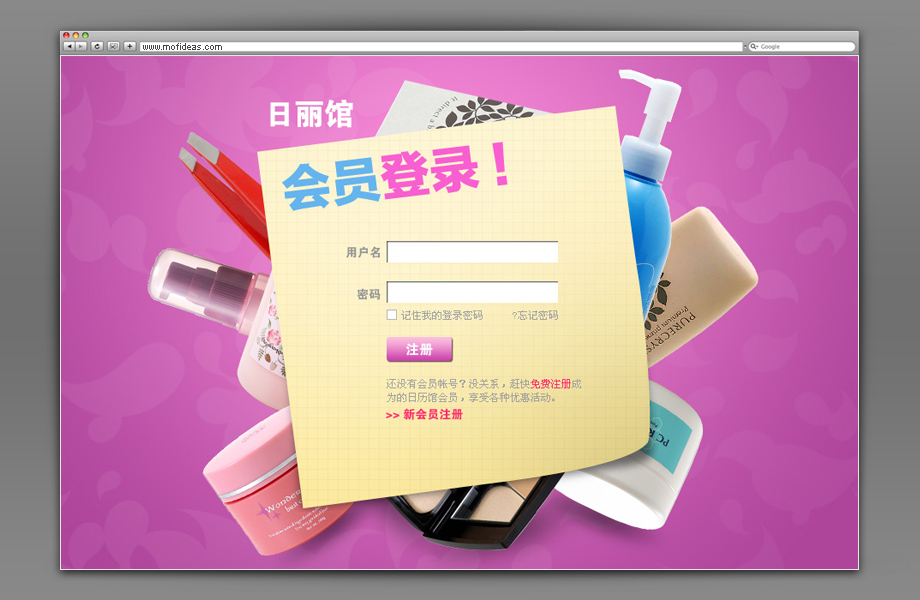
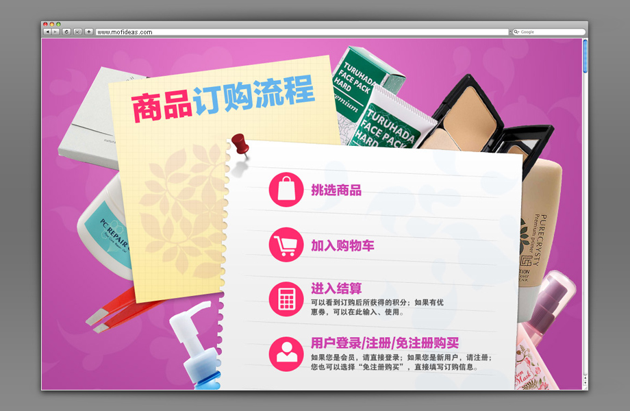
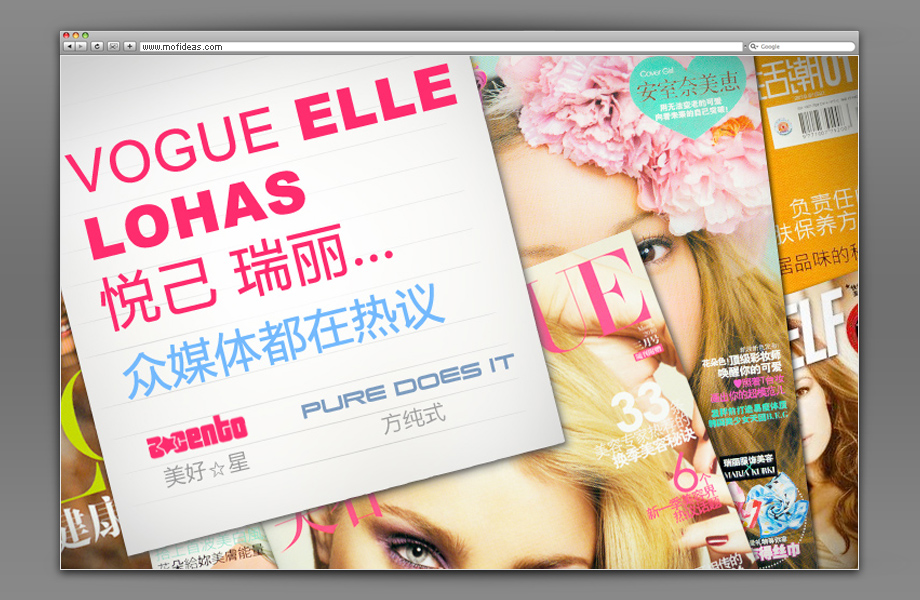
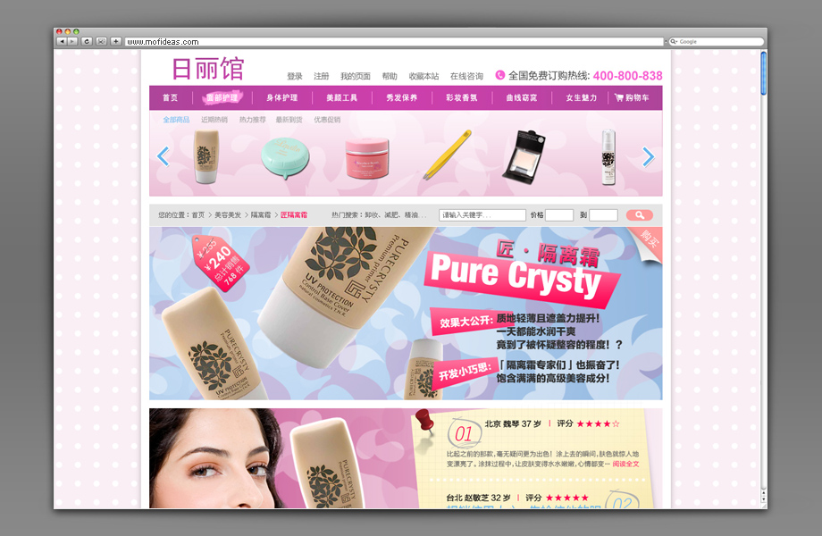
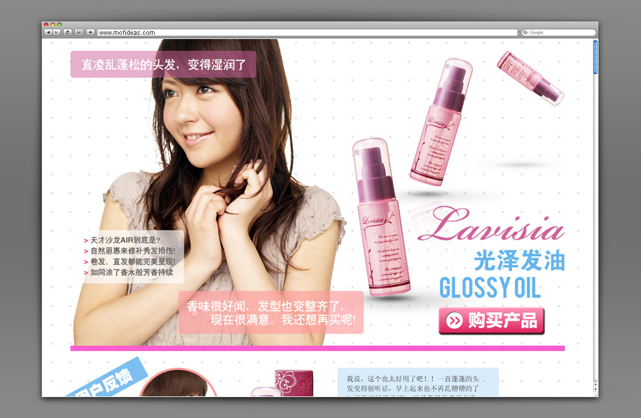

Ri Li Guan
Launched in 2010, Ri Li Guan was an one of the first e-commerce website in China to trade original Japanese cosmetics to the Chinese market with a reasonable price. Targeted girls in their early twenties, the direction was aiming to create a pinky girly feel and the design needs to create a overall Japanese teenage style to trigger viewers' desire to purchase.





Back To All Works